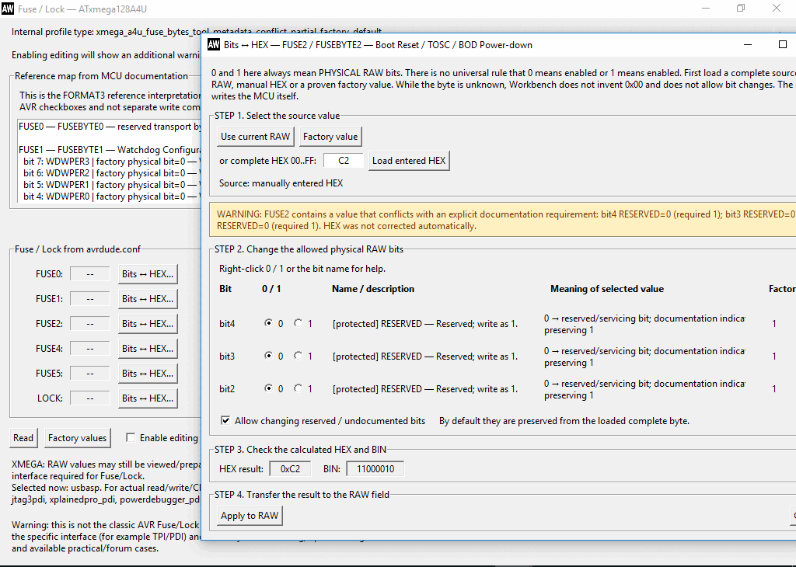
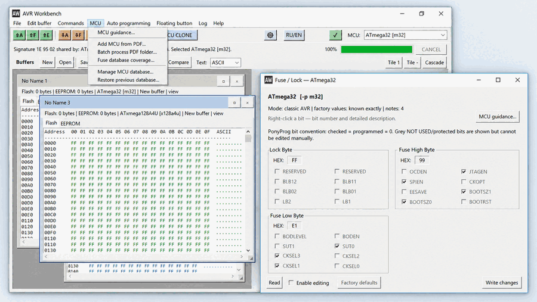

AVR Workbench
Free Windows GUI for AVRDUDE 8.2 with visible memory buffers, named Fuse/Lock controls, Bits ↔ HEX tools, Backup/Clone MCU and MCU/PDF workflow.
Бесплатная Windows-оболочка для AVRDUDE 8.2 с наглядными буферами памяти, именованными Fuse/Lock, Bits ↔ HEX, Backup/Clone MCU и инструментами MCU/PDF.
Portable build. No installer required.
Портативная сборка. Установка не требуется.
Features
Возможности
Flash / EEPROM buffers
Open, inspect, save and compare memory data before programming.
Открытие, просмотр, сохранение и сравнение данных памяти до записи в MCU.
Named Fuse / Lock + Bits ↔ HEX
Named bit controls, complete HEX values, factory values and byte-level calculation.
Именованные биты, полный HEX, заводские значения и побайтовый расчёт.
MCU / PDF tools
MCU guidance, adding MCU data from PDF, batch PDF processing and Fuse database coverage tools.
Подсказки MCU, добавление данных из PDF, пакетная обработка PDF и контроль покрытия Fuse DB.
HEX / RAW tools
Direct HEX/RAW workflows and low-level byte operations.
Прямая работа HEX/RAW и низкоуровневые операции с байтами.
Backup / Clone MCU
Back up and restore selected memory and configuration areas.
Резервное копирование и восстановление выбранных областей памяти и конфигурации.
Programmer diagnostics · RU / EN
Programmer/interface diagnostics and Russian/English interface.
Диагностика программатора/интерфейса и русский/английский интерфейс.
Screenshots
Скриншоты



Download AVR Workbench
Скачать AVR Workbench
The release ZIP will be published in GitHub Releases. Verify SHA-256 after downloading.
ZIP релиза будет опубликован в GitHub Releases. После загрузки можно проверить SHA-256.
System
Система
Windows desktop application. Tested on Windows 10 32-bit and 64-bit systems. AVRDUDE is a separate open-source project; its authorship and license belong to the AVRDUDE project and its contributors.
Настольная программа для Windows. Проверялась на Windows 10 x32 и x64. AVRDUDE — отдельный open-source проект; авторство и лицензия AVRDUDE относятся к проекту AVRDUDE и его разработчикам.